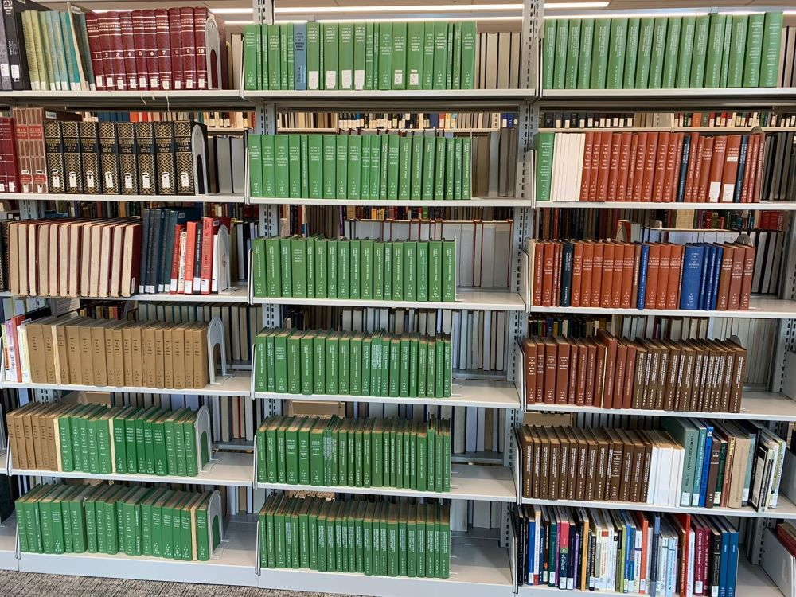

{% extends '_base.html' %}
{% block content %}
<head>
    <link rel="stylesheet" href="../static/css/style.css"> 
    <script type="text/javascript" src="/static/js/panther-central.js"></script>
</head>
<div class="main">
    <div class="heading">
            <a>Welcome to Hillman Library</a>
    </div>
	<div class="timer">
        <div class="time"><p><span id="countdownminutes">-</span>:<span id="countdownseconds">-</span></p></div>

        <script type="text/javascript">
            var timeleft = parseInt(localStorage.getItem("timerLeft"));
            var minutes = parseInt(timeleft/60);
            var seconds = timeleft % 60;
            if (minutes < 10) 
            {
                minutes = "0" + minutes;
            }
            if (seconds < 10) 
            {
                seconds = "0" + seconds;
            }
            document.getElementById("countdownminutes").textContent = minutes;
            document.getElementById("countdownseconds").textContent = seconds;
            var downloadTimer = setInterval(function(){
            if(localStorage.getItem("keepRunning") == "true") { timeleft--; }
            localStorage.setItem("timerLeft", String(timeleft));
            var minutes = parseInt(timeleft/60);
            var seconds = timeleft % 60;
            if (minutes < 10) 
            {
                minutes = "0" + minutes;
            }
            if (seconds < 10) 
            {
                seconds = "0" + seconds;
            }
            document.getElementById("countdownminutes").textContent = minutes;
            document.getElementById("countdownseconds").textContent = seconds;
            if(timeleft <= 0)
            {
                clearInterval(downloadTimer);
                alert("You have run out of time!");
                window.location = "./home.html"; 
            }
            },1000);
        </script>
    </div>
	<div class="headhillman">
        <h4> I spy a Yellow Book</h4>
        <br>
	</div>
  <div class="map">
   

    <map name="image-map">
        <area target="" alt="" title="" href="/map2.html" onclick="document.location=templates/map2.html" coords="728,648,743,743" shape="rect">
    </map>
</div>

{% endblock %}
